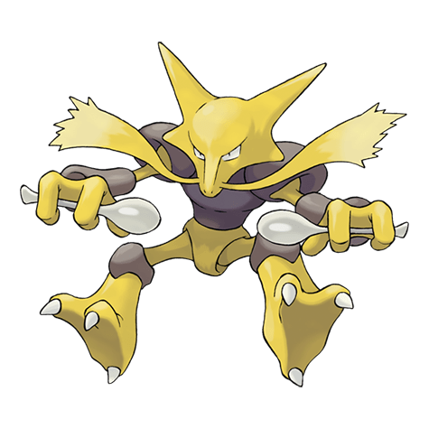
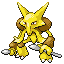

Назад
Алаказам

Алаказам — Покемон 1 поколения под номером 65 в Покедекс. Обитает он в регионе Канто и относится к Психическому типу. Это последняя постоянная стадия эволюции Покемона Abra. Мозг Алаказама постоянно растёт, из-за чего голова становится слишком тяжёлой для поддержки шеи. Поэтому этот Покемон держит голову, используя свою психокинетическую силу.
Тип:
Психический
Эволюция

# 065 Алаказам
Финальная стадия